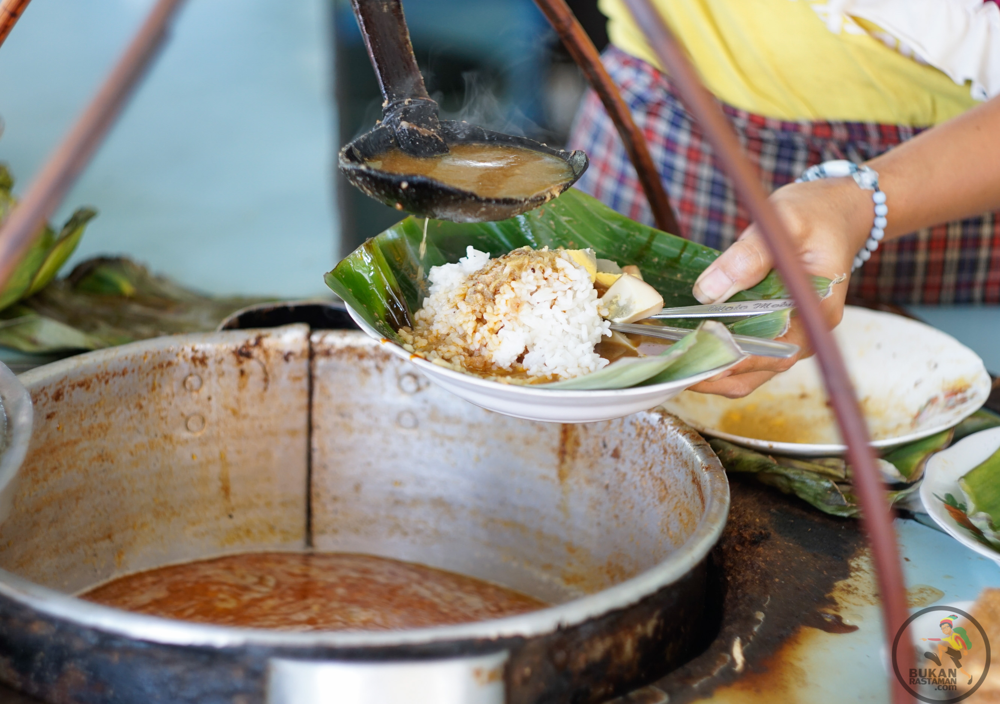
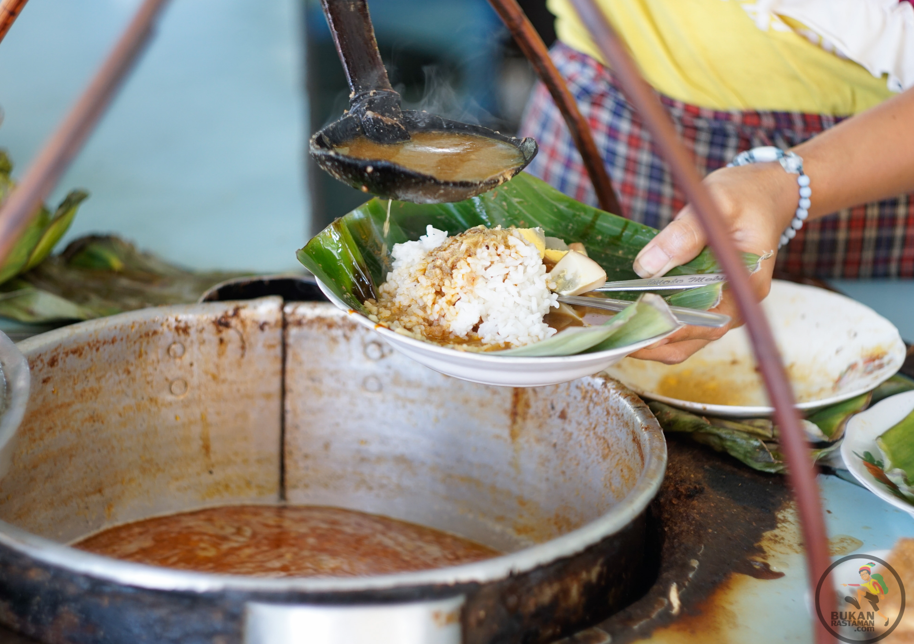

Maknyusnya Nasi Gandul Khas Pati
Berkunjung ke Pati, Jawa Tengah, nggak lengkap rasanya kalau nggak menyempatkan diri untuk mencicipi nasi gandul. Daripada bingung di mana makan nasi gandul yang enak, tiga warung ini bisa jadi referensimu saat jala-jalan ke sana.
Bagi yang belum pernah mendengarnya, mungkin nama makanan satu ini terdengar sedikit aneh. “Gandul” adalah kata dalam bahasa Jawa yang berarti “menggantung”. Tapi bukan nasinya yang disajikan menggantung, melainkan cara berjualannya.
Jadi, konon dulu penjual nasi gandul di Pati menjajakan dagangannya dengan digantung pada pikulan. Nah, dari situlah kemudian muncul nama “nasi gandul”.
Nasi gandul adalah nasi putih yang diberi lauk empal atau daging sapi bumbu bacem, lalu diguyur kuah bercita rasa gurih. Hm, kebayang, kan, gimana menggodanya penampilan nasi ini?
Kalau kamu pengin mencicipi nikmatnya nasi gandul, beberapa warung nasi gandul di Pati ini bisa jadi referensi. Mana saja?
1.Nasi Gandul Pak Meled
Nasi Gandul Pak Meled merupakan salah satu warung legendaris yang menyajikan masakan unik ini. Untuk menjaga cita rasanya, hingga kini Pak Meled masih menggunakan metode memasak yang sama, yakni merebus kuah nasi gandul dalam kuali tanah liat alias gerabah.
Seporsi nasi gandul ini bisa kamu santap dengan merogoh kocek sebesar Rp 25 ribu saja. Oya, warung ini berada di Krajan Gajah Mati, Desa Gajahmati, Kecamatan Pati. Supaya nggak kecele, datanglah pukul 11.00-21.30 WIB, ya.
2.Nasi Gandul H A Warsimin
Selain Nasi Gandul Pak Meled, Nasi Gandul H A Warsimin juga patut kamu coba. Pilihan dagingnya lengkap, mulai dari kikil, daging, paru, empal, hingga otak sapi. Soal rasa, nggak perlu ditanya. Dijamin enak!
Berada di Jl Roro Mendut, Semampir, Kabupaten Pati, warung ini buka setiap hari mulai pukul 10.00-17.00 WIB.
3.Nasi Gandul Romantis H.S. Sardi
Kalau mampir ke Nasi Gandul Pak Sardi, harus siap-siap antre. Ini karena kedai tersebut konon menjadi tempat terfavorit warga Pati.
Sejak tahun 1978, rasa Nasi Gandul Pak Sardi memang nggak pernah berubah, tetap enak dan maknyus! Untuk seporsi nasi gandul, kamu perlu menyiapkan bujet sekitar Rp 18 ribu-Rp 20 ribu.
 
